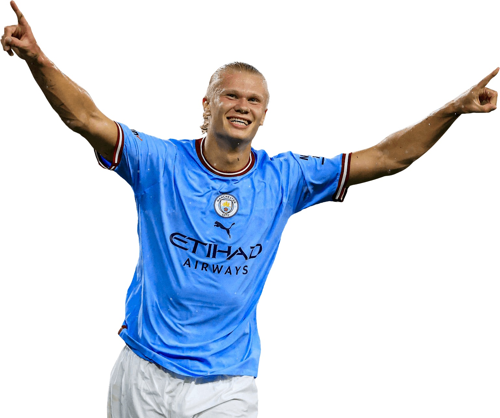
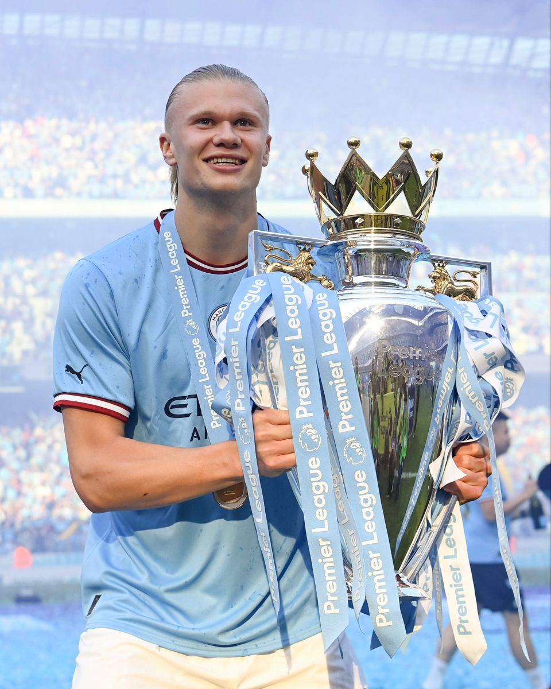
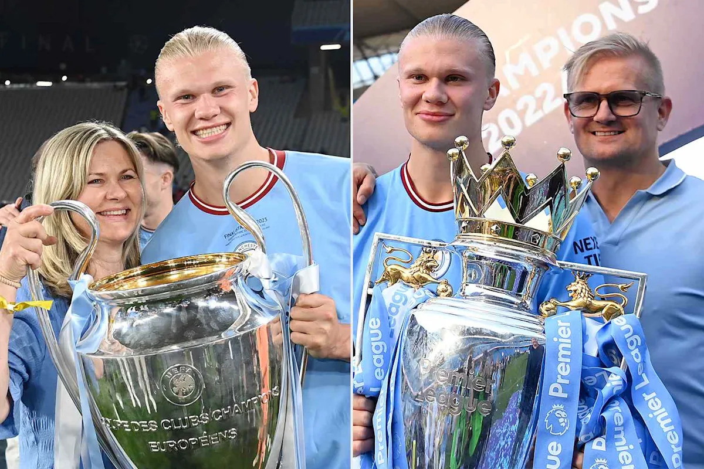
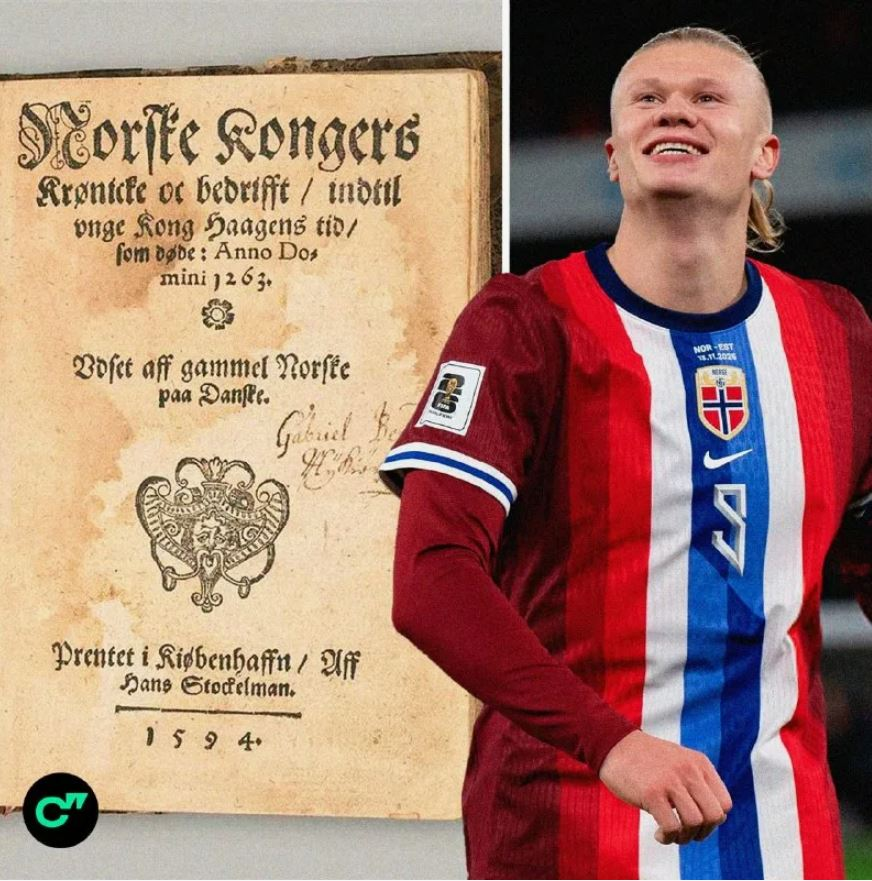
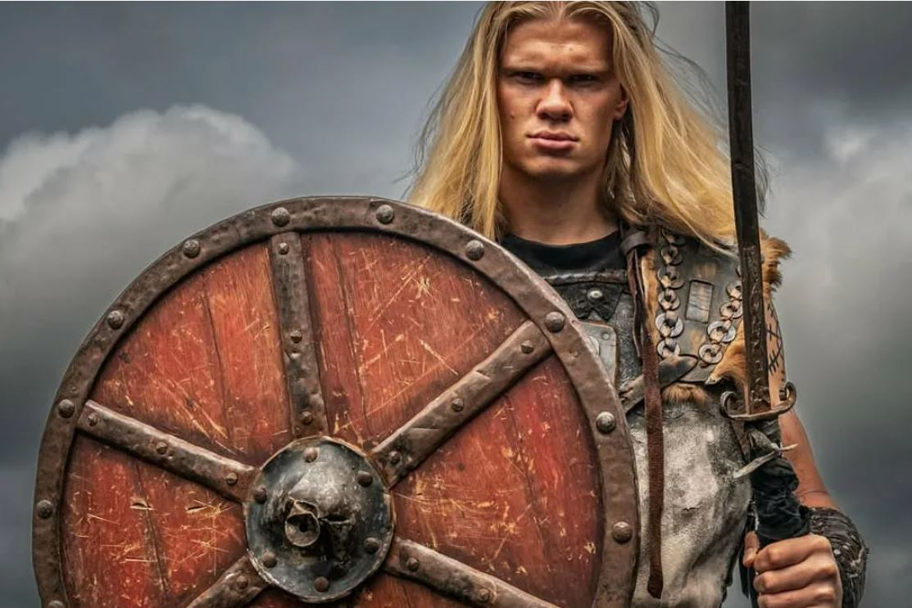
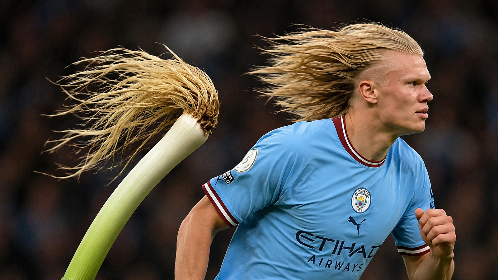
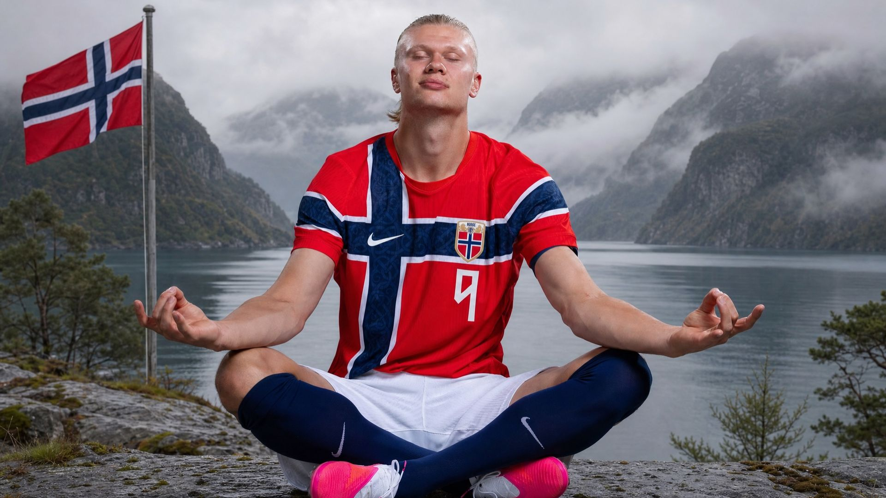
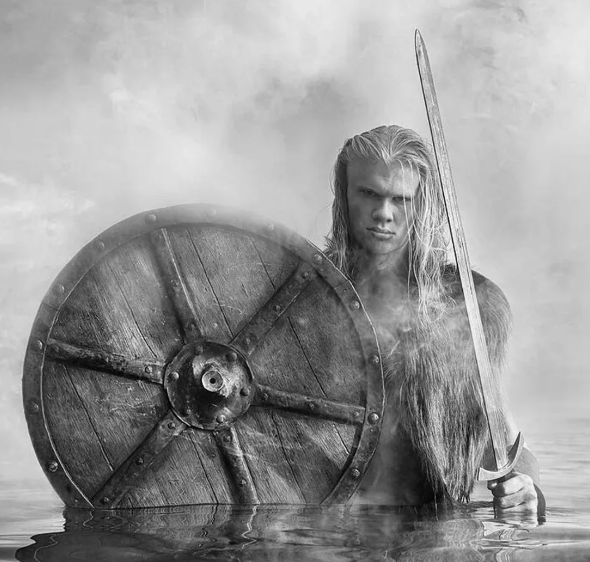
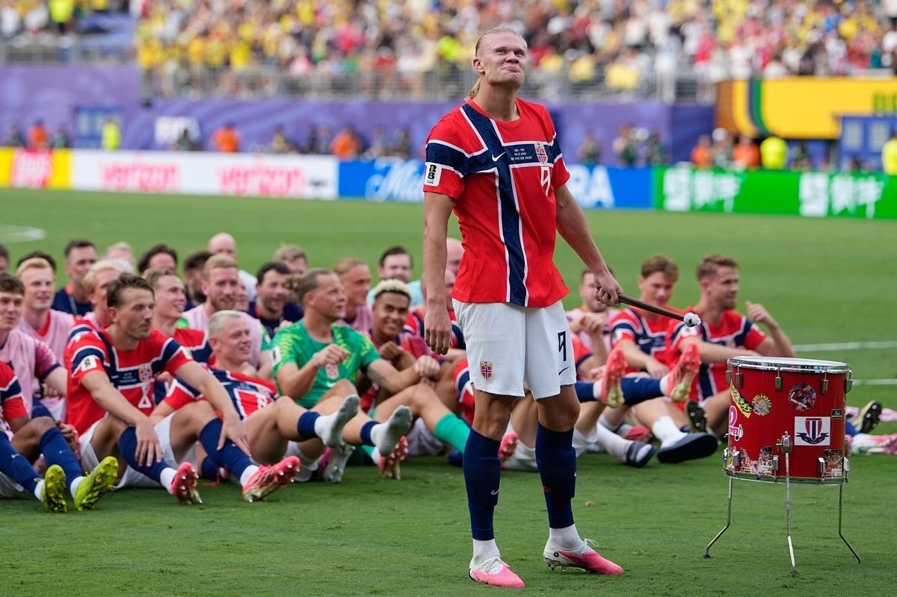

01
The Happiest Man on the Pitch

Biographical narrative · Portrait of an athlete
Level: Intermediate / Advanced

Core idea: Happiness can come from choosing what you love, working for it, and staying human when success arrives.
Values: freedom of choice · hard work · humility · gratitude · joy
Key message: Success is not just about winning. It is about staying human.





Watch the short video and notice the energy, confidence and joy of the game.
Six chapter recordings are supplied separately, one for each part of the journey.

Read, listen, think and connect the story to your own experience.
Joy · freedom · roots · kindness · unity · gratitude
1. Match the word with its definition: contagious, to console, humble, to kneel, to cherish.
2. Fill in the blanks:
3. Find synonyms in the text for: attractiveness → ___________; not fake → ___________; a very silly or funny person → ___________.
Write a 5–7 sentence speech Haaland could give to young athletes about following their dreams and staying happy.
Describe a ritual or tradition that unites people in your country, city, or school.
Write a diary entry from Haaland after the defeat against England.
Write a prompt for an AI image generator to create Haaland rowing with his teammates in front of a stadium.
Choose one thing important to your heritage and explain why it matters to you.
Choose up to three values that you think matter most for a happy and meaningful life.
Original lyrics and Russian translation — formatted by stanzas for easy singing along.

I grew up in a town so small
Where every field was a football hall
My father played, my mother ran
But they just let me find my plan
They didn't push, they let me choose
To win or lose, to sing the blues
And one day I just kicked the ball
And never thought I'd have it all
I'm just a Viking on the road
With heavy boots and a heavy load
But I carry joy, not just the weight
I found my home, I found my fate
They call me cyborg, call me beast
But I'm a human, at the least
A small-town boy who dared to dream
And nothing's ever as it seems
I've seen the memes, I've laughed along
They sing my name in a silly song
I don't pretend to be so grand
I'm just a guy from a northern land
I gave a book to my hometown
The sagas of the old renown
To show them that I never left
My roots are strong, I'm not bereft
I'm just a Viking on the road
With heavy boots and a heavy load
But I carry joy, not just the weight
I found my home, I found my fate
They call me cyborg, call me beast
But I'm a human, at the least
A small-town boy who dared to dream
And nothing's ever as it seems
I row with you, I row with all
When the world is big and I feel small
I row with you, I row with them
A simple boy from a simple gem
Я вырос в городке, где тесно от мечты,
Где каждое футбольное поле — целый мир.
Мой отец играл, а мама бегала,
Но никогда судьбу мою за меня не выбирали.
Они не давили — мне дали самому решать:
Победить или проиграть, смеяться или грустить.
И однажды я просто ударил по мячу —
Не зная, что однажды он изменит всё вокруг.
Я просто викинг, что идёт своей дорогой,
С тяжёлыми бутсами и ношей за плечами.
Но я несу с собой не только груз —
Я ношу с собой радость, веру и надежду.
Меня зовут киборгом, зовут зверем,
Но я всего лишь человек — такой же, как все.
Парень из маленького города, посмевший мечтать,
Ведь жизнь не всегда такова, какой кажется нам.
Я видел мемы — и смеялся вместе со всеми,
Слышал, как моё имя превращали в смешные песни.
Я вовсе не пытаюсь казаться кем-то великим —
Я просто парень с севера, из далёкой земли.
Я подарил родному городу книгу —
Саги о героях, о древней славе.
Чтобы напомнить: я никогда не забывал,
Откуда вышел и кем я был.
Мои корни глубоко в этой земле,
И сколько бы ни было дорог впереди —
Я всегда остаюсь её сыном.
Я иду с тобой, я иду со всеми,
Когда мир огромен, а я кажусь себе маленьким
Я иду с тобой, я иду вместе с ними —
Простой парень из маленького города,
Который всегда остаётся моим домом.
Close your eyes, listen to the song, and then answer:
Read the lines from the song and reflect on what they reveal about Haaland's character:
| Line from the Song | What does this tell us about Haaland? |
|---|---|
| «They didn't push, they let me choose» | He values freedom and choice. He is grateful to his parents. |
| «I carry joy, not just the weight» | |
| «They call me cyborg, call me beast / But I'm a human, at the least» | |
| «I don't pretend to be so grand» | |
| «My roots are strong, I'm not bereft» | _ |
These questions are designed to connect Haaland's story to your own journey.
Match the word/phrase to its meaning:
| Word/Phrase | Meaning |
|---|---|
| 1. to push | a) to take a risk, to be brave enough to try |
| 2. to dare | b) a difficult or heavy responsibility |
| 3. load | c) to pressure someone to do something |
| 4. roots | d) to have respect for your past |
| 5. bereft | e) a feeling of being empty or lost without something |
| 6. not to pretend | f) to be honest, not to act like someone you're not |
Complete the sentences to explain what Haaland means:
Rewrite the sentences using the structure «I am someone who...» to describe your own values, based on Haaland's example.
Example: Haaland is someone who values freedom. → I am someone who values...
Haaland thanks his parents for never pushing him. Think of one person (a parent, grandparent, teacher, or friend) who gave you the freedom to choose your path. Write them a short letter (3-4 sentences) of gratitude, using at least two words from the vocabulary list.
Choose ONE:
Original lyrics and Russian translation — formatted by stanzas for easy singing along.

He came from nowhere, from the snow
A Viking heart, a gentle glow
He didn't come to break the game
He came to show us all the same
That you can be the best and still be kind
You can have the world and keep your mind
This is the boy from Bryne, he shows us how
To be a star and not forget your vows
To laugh at memes, to share a tear
To row with us when victory is near
He is the hope, he is the light
He proves that being kind is right
We row with him, we row as one
And all our journeys have begun
He cried with us when we went home
He sat with us, he was not alone
A simple act, a kneeling friend
A gentle heart that will not bend
(Lead:) So row with him!
(All:) RO!
(Lead:) And row with us!
(All:) RO!
(Lead:) And never stop believing!
This is the boy from Bryne, he shows us how
To be a star and not forget your vows
To laugh at memes, to share a tear
To row with us when victory is near
He is the hope, he is the light
He proves that being kind is right
We row with him, we row as one
And all our journeys have begun
Row... row... row...
From Bryne to the sky...
Row... row... row...
We row... you and I...
Он вышел из снегов, почти из ниоткуда,
С сердцем викинга — и светом доброты.
Он пришёл не для того, чтоб покорить игру —
Он нам напомнил: верить можем мы.
Можно быть лучшим — и добрым остаться,
Можно весь мир обрести — и себя не терять.
Это парень из Брюне — и он учит нас,
Как сиять звездой, но помнить обещания,
Как смеяться над мемами, слезу разделить,
Как идти с нами к победе, вместе путь пройти.
Он — надежда, он — наш свет,
Он доказывает: доброта — не слабость, нет.
Мы идём с ним рядом, мы — одна семья,
И с него началась дорога для тебя и меня.
Он плакал вместе с нами, когда пришлось уйти,
Сидел среди своих — и был не один.
Простой жест — и друг склоняется к земле,
А в сердце столько силы, что не сломить её вовек.
(Солист:) Так иди с ним!
(Все:) Вперёд!
(Солист:) И вместе с нами!
(Все:) Вперёд!
(Все:) И никогда не переставай верить!
Идём... идём... вперёд...
Из Брюне — к небесам...
Идём... идём... вперёд...
Мы вместе... ты и я...
Answer the questions in 1-2 sentences:
Match the line from the song with the fact from the text about Erling Haaland:
| Line from the Song | What it refers to in the text |
|---|---|
| 1. «He came from nowhere, from the snow» | A. Haaland sharing the young fan's tears after the match |
| 2. «He didn't come to break the game» | B. His upbringing in a small Norwegian town |
| 3. «To laugh at memes, to share a tear» | C. Playing for the national team as a team player, not just a star |
| 4. «He cried with us when we went home» | D. His sense of humour and empathy |
| 5. «He is the hope, he is the light» | E. How his personality inspires millions worldwide |
In pairs or small groups, discuss these questions. Then write short answers.
Match the word to its meaning as used in the song:
| Word | Meaning |
|---|---|
| 1. glow | a) a promise or serious commitment |
| 2. vow | b) a soft, warm light |
| 3. to bend | c) to change shape or give up |
| 4. gentle | d) a person who watches and supports a team |
| 5. fan | e) soft, kind, mild |
Look at these lines and explain them:
Rewrite the sentences using the structure «He is the one who...» to express why people admire Haaland.
Example: He is kind. → He is the one who shows that being kind is right.
Role Play: In pairs, act out a conversation:
Person A: You are a young fan who just met Haaland after a match. You are crying because your team lost.
Person B: You are Haaland. You are tired but you want to comfort the fan. What do you say?
The «Row Together» Challenge: Think of a person, a team, or a community you feel you «row» with. Write a short paragraph (3-4 sentences) describing what it means to you.
Choose ONE:
Use the role-play and creative tasks above as a short reflection and speaking challenge.
Follow your passion freely. Work hard. Stay humble. Enjoy the journey. And never forget to stay human.